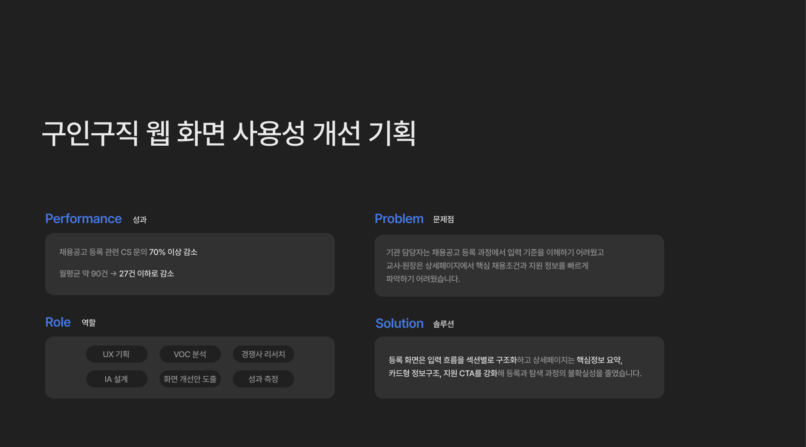

Project Detail View
프로젝트 자세히 보기



반복되는 CS를 UX 개선의 출발점으로 전환한 프로젝트입니다. 기관 담당자는 채용공고 등록 과정에서 입력 기준을 이해하기 어려웠고, 교사·원장은 상세페이지에서 핵심 채용조건과 지원 정보를 빠르게 파악하기 어려웠습니다.
UX 기획, VOC 분석, 경쟁사 리서치, IA 설계, 화면 개선안 도출, 성과 측정까지 전 과정을 담당했습니다. 등록 화면은 입력 흐름을 섹션별로 구조화하고, 상세페이지는 핵심정보 요약·카드형 정보구조·지원 CTA 강화로 등록과 탐색 과정의 불확실성을 줄였습니다.
사용자는 등록, 확인, 지원, 관리 단계에서 각각 다른 혼란을 겪고 있었습니다. 원장·기관 담당자는 "입력해야 할 항목이 너무 많고 어디부터 작성해야 할지 모르겠다", "모집요강은 어떤 기준으로 선택해야 하는지 헷갈린다"고 했습니다.
교사·구직자는 "지원자격, 근무조건, 마감일이 한눈에 보이지 않아 공고를 끝까지 읽어야 한다", 운영팀은 "같은 질문이 반복되어 운영 리소스가 소모된다"고 했습니다. 사용자의 불편은 단일 화면의 문제가 아니라 전체 과정에 걸쳐 발생하고 있었습니다.
VOC 분석 → 페인포인트 도출 → 가설 설정 → 경쟁사 리서치 → 화면 개선 → 성과 측정의 순서로 진행했습니다.
CS 문의 데이터를 사용자 유형별로 분류해 페인포인트를 도출했습니다. '사용자가 헷갈리는 정보를 먼저 구조화하면 문의와 이탈이 줄어들 것이다'를 핵심 가설로 설정하고 4가지 세부 가설을 수립했습니다.
경쟁사 구인구직 서비스의 등록·탐색 구조를 분석했습니다. 입력 항목 섹션별 구분, 자유입력→선택형 전환, 상세페이지 핵심정보 상단 요약, CTA와 관리 동선 명확화의 4가지 개선안을 설계했습니다.
개선 화면 오픈 후 CS 문의 추이와 사용자 행동 데이터를 모니터링했습니다. 개선 전후 CS 접수량, 등록 완료율, 클릭 유입을 기준으로 효과를 측정했습니다.
구조화된 UX 개선은 CS 감소와 탐색 효율 개선으로 이어졌습니다. 등록자·구직자·운영자의 문제를 동시에 해결한 구인구직 서비스 UX 개선 프로젝트였습니다.
채용공고 등록 관련 CS 문의 70% 이상 감소
월평균 CS 문의 약 90건 → 27건 이하로 감소
핵심 개선 영역 4곳, 2개 화면 집중 개선으로 전체 운영 문의 구조적 해소
이 프로젝트는 사용자가 어려워하는 지점을 CS 데이터로 정의하고, 입력 구조와 정보 우선순위를 재설계해 실제 운영 문의를 줄인 사례입니다. 좋은 UX는 사용자 경험을 개선하는 동시에 운영 비용을 줄이는 데도 직접 기여한다는 것을 수치로 확인했습니다.
반복되는 CS 티켓이 사용자 리서치의 강력한 출발점이 될 수 있다는 것을 배웠습니다. 별도의 인터뷰 없이도 이미 사용자가 막히는 지점이 데이터로 쌓여 있었고, 이를 구조적으로 읽고 개선 범위를 확장한 것이 이 프로젝트의 핵심이었습니다.
Project Detail View
